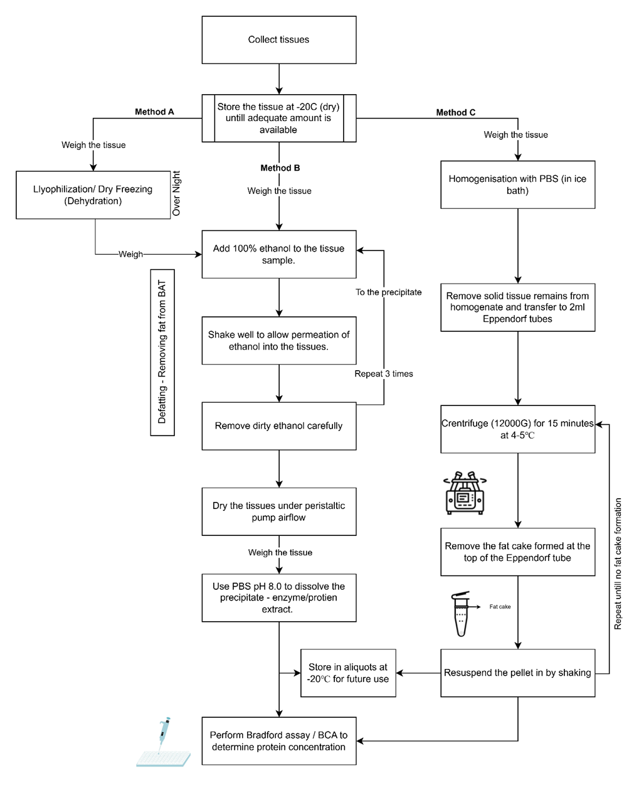
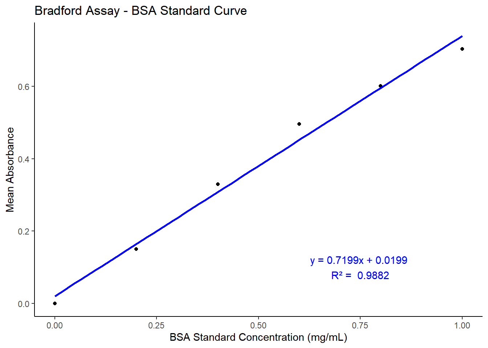
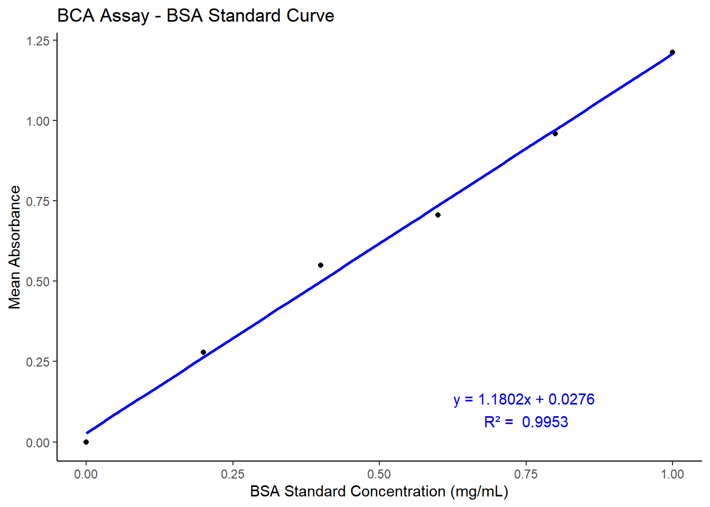
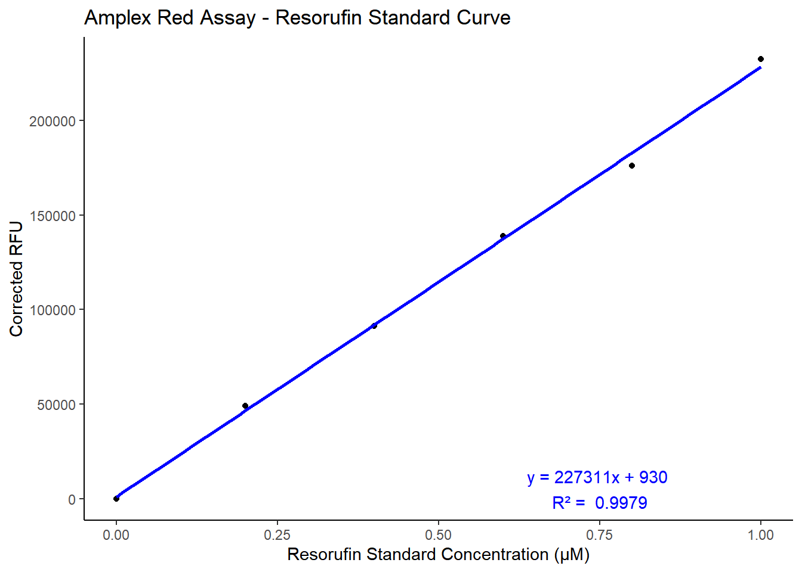

100% Ethanol, 96 well plate (Flatbottom – Black), 96 well plate (Flatbottom – Clear), Amplex® red monoamine oxidase kit (Thermo-Fisher Scientific), BCA reagent, BMG plate reader (SPECTROstar Nano, CLARIOstar Plus), Bradford reagent, BSA, Caffeine-anhydrous, Centrifuge, Deionised water, DMSO, Eppendorf tubes (1ml and 2ml), Ethanol, Falcon tubes (25ml), Freeze dryer, Freeze-dryer, Gilson Pipettes – P5000, P1000, P200, P20, and P2, Peristaltic pump, pH meter, Potassium chloride, Potassium phosphate, Rat brown adipose tissue, Simvastatin, Sodium chloride, Sodium phosphate, and Tissue Homogeniser (Sartorius, Potter S). All materials were procured from Sigmund Aldrich unless specified.
Animals used: Male Wistar rats (Rattus Norvegicus) obtained from Envigo on a Teklad 2014 14% protein diet, weighing 260-274g approximately were used to obtain the brown adipose tissue from the scapular region. All animals used in this study were handled and treated in accordance with animal ethical guidelines provided by the University of Hertfordshire.
3.2 Methodology
3.2.1Tissue Collection
The tissues were excised from the rats by animal technicians and was provided in a falcon tube. The falcon tube was weighed before and after adding the tissue to measure the weight of the tissue collected every day. After weighing the tissues, they were stored at -20℃ for processing later. The tissues were not processed on the same day due to less volume of the tissue, as only one animal was sacrificed each day for academic purposes. The tissue samples were collected every day and stored until adequate volume of tissue was available for further processing. Brown adipose tissue samples were specifically requested for the project as they were not being used for any other experiments carried out at the university. This enables the effective use of animals and animal tissues promoting refinement aspect of the three Rs (Replacement, reduction and refinement) of animal research.
3.2.2Protein extraction
Extracting proteins from adipose tissue is challenging due to a heavy fat contamination. These lipids are known to interfere in downstream assays which count affect the quality of results. Hence existing literature and methods that proposed a viable method were studied and parts of which were incorporated (An and Scherer 2020; Marin et al. 2019). Removing fat exclusively and retaining the proteins can be achieved by using an organic solvent such as acetone, ethanol, chloroform, or phenol to dissolve the lipids and precipitate the proteins in the sample (Dezse, Frank, and Baptista 2020). Acetone was the preferred choice of defatting agent; however, it was not used in this project due to limited availability. 100% Ethanol was used due to its availability. Since ethanol is known to denature proteins, care was taken to limit the duration of exposure to the adipose tissue, and tissues were dried to remove residual ethanol.
3.2.3Defatting the tissues
The BAT tissues were weighed and transferred to a single falcon tube and 25ml of 100% ethanol was added to dissolve the fat. The falcon tube was shaken multiple times to enable even distribution of ethanol. The tissues were treated with ethanol for 10 minutes and the dirty ethanol containing the fat was decanted and 25 ml of fresh ethanol was added to the samples. This process was repeated for 3 times to remove maximum amount of fat from the tissue. The ethanol wash was limited to three times to prevent the denaturation of proteins by ethanol.
After ethanol wash, the tissues were dried under an airflow outlet produced using a peristaltic pump (3485 ml/min) for 2 hours Figure 3.1. The dried tissues were weighed to estimate the amount of fat removed by the ethanol wash.
3.2.3.1Method A
Adequate number of tissues were weighed for freeze drying to remove the water from the tissues for further processing with ethanol to remove the fat. The falcon tubes containing the tissues were removed from the freezer, the caps were removed and a layer of parafilm was applied, and tiny holes were made to allow the escape of vapour during the freeze-drying process. These falcon tubes were placed in the freeze dryer overnight, to completely remove any water from the tissues.
After 24 hours, the falcon tubes containing the samples were removed from the freeze dryer and weighed to estimate the loss of water. The defatting with ethanol was performed as per the steps mentioned in Section 3.2.3 . This tissue was treated using PBS with a pH of 8.0 to dissolve the proteins. 10ml of cold PBS was added to the falcon tube containing defatted tissues on an ice bath. The samples were shaken thoroughly to ensure maximum dissolution of proteins into the buffer. After 30 minutes, the PBS was decanted into multiple 1.5ml Eppendorf tubes for storage and future experiments.
3.2.3.2Method B
Adequate amount of tissue was weighed into a falcon tube and 20ml of cold 100% ethanol was directly added to the tissue. The defatting with ethanol was performed as per the steps mentioned Section 3.2.3 . The extracts were stored in 1.5ml Eppendorf tubes at -20 for future use.
3.2.3.3Method C
This method of removing fat from tissue was adapted from the ReLi protocol (Marin et al. 2019). The adaptations were made to accommodate reagent, and equipment availability. Adequate amount of tissue was weighed and chopped into tiny pieces using sterile forceps and scalpel. The tissues were then added to 25ml homogeniser tube and cold PBS (1ml/mg tissue) was added to the tissue. The homogeniser tube was attached to the Potter-Elvehjem homogeniser ensuring the bottom of the homogeniser tube was immersed in the ice bath. The tissue was mechanically homogenised at a constant speed of 500rpm with occasional stirring to ensure proper homogenisation. After the tissue was homogenised, the extract was transferred to 2ml Eppendorf tubes for centrifugation. The extracts were centrifuged at 12,000G for 15 minutes at 4℃. The fat cakes formed at the top of the Eppendorf was carefully removed and the pellet was resuspended and recentrifuged. This was repeated until there was no fat cake formation. The extracts were stored as aliquots for future use.

Figure 3.1: Flow diagram of steps involved in extracting SSAO from rat brown adipose tissue using Method A, Method B and Method C
3.2.4Protein Quantification
Bradford and BCA assays were performed to determine the concentration of proteins in each extract. Bradford assay quantifies the protein concentration by measuring the amino acid residues that binds to the Coomassie Brilliant Blue G-250 dye.
Proteins present in the sample bind to the dye resulting in bright blue appearance which can be measure at 595nm (Noble and Bailey 2009). Alternatively, Bicinchoninic acid (BCA) assay was also performed due to its high sensitivity and tolerance for interference. BCA measures the protein concentration in two steps, first (biuret reaction) the peptide bonds in the sample reduce the cupric ions in the reagent to cuprous ions and then one cuprous ion chelates with 2 molecules of BCA to produce an intense purple complex (Noble and Bailey 2009). This can be measured at 562nm, as per the manufacturer’s instructions.
Upon obtaining absorbances of undiluted stock samples that do not fit inside the standard curve, the stock samples were diluted and read again. The protein concentrations for the stock samples were calculated by correcting the concentration of the diluted sample with the dilution factor.
Known concentrations of Bovine Serum Albumin (BSA) is used to prepare a standard curve which was used to interpolate absorbances obtained from unknown samples (Noble & Bailey, 2009). 10 mg of BSA was weighed and dissolved in 10ml of deionised water to prepare a 1mg/ml stock BSA standard. The 1mg/ml stock was used to prepare further dilutions as per table 1.
BSA Standard dilution
BSA Stock Volume
Deionised water volume (ml)
Final concentration (mg/ml)
0.8
0.2
0.8
0.6
0.4
0.6
0.4
0.6
0.4
0.2
0.8
0.2
3.2.4.1Bradford assay
10µl of each standard (2 replicates) and extracts (5 replicates) from each method was pipetted into each well of a 96 well plate with 200µl of Bradford reagent. Deionized water was used as blank for standards, and PBS was used as the blank for samples. 200µl of Bradford reagent was added to the wells containing the blanks. The plates were read using BMG Labtech CLARIOstar plate reader at 595nm. The stock sample from all methods were diluted 10-fold and the absorbance was corrected with the dilution factor. The absorbance readings were transferred to excel and then to GraphPad prism to plot standard curves and estimate unknown protein concentrations from the linear standard curve equation. However, for the purpose of displaying the results, same analysis are performed using R.
Code
library(tidyverse)# Data: Standard Concentration and Absorbance valuesbradford_sc <-tibble(standard_Concentration =c(1.0, 0.8, 0.6, 0.4, 0.2, 0.0),absorbance_1 =c(0.682, 0.592, 0.499, 0.334, 0.138, 0),absorbance_2 =c(0.725, 0.61, 0.493, 0.324, 0.161, 0))# Calculate the mean absorbancebradford_sc$mean_absorbance <-rowMeans(bradford_sc[, c("absorbance_1", "absorbance_2")])# Fit a linear modelbrad_model <-lm(mean_absorbance ~ standard_Concentration, data = bradford_sc)# Extract the equation and R-squared valuecoefficients <-coef(brad_model)intercept <-round(coefficients[1], 4)slope <-round(coefficients[2], 4)r_squared <-round(summary(brad_model)$r.squared, 4)equation <-paste0("y = ", slope, "x + ", intercept)# Plotting the standard curveggplot(bradford_sc, aes(x = standard_Concentration, y = mean_absorbance)) +geom_point() +geom_smooth(method ="lm", se =FALSE, color ="blue") +labs(title ="Bradford Assay - BSA Standard Curve",x ="BSA Standard Concentration (mg/mL)",y ="Mean Absorbance" ) +annotate("text", x =0.75, y =0.1, label =paste(equation, "\nR² = ", r_squared), color ="blue") +theme_classic()

Figure 3.2: Standard Curve for BSA protein concentration by Bradford assay. The absorbance was measured at 595nm using BMG Labtech SPECTROstar plate reader.
3.2.4.2BCA assay
BCA assay was performed to estimate the protein concentration in the extracts obtained from Method A, Method B, and Method C. 25µl of standard and sample were pipetted into each well of a clear flatbottom 96 well plate with 200µl of BCA reagent. The plates were incubated at 37℃ for 30 minutes and absorbance was measured at 562nm using the BMG Labtech CLARIOstar plate reader. The stock sample from all methods were diluted 10-fold and the absorbance was corrected with the dilution factor.
Code
library(tidyverse)# Data: Standard Concentration and Absorbance valuesbca_sc <-tibble(standard_Concentration =c(1.0, 0.8, 0.6, 0.4, 0.2, 0.0),absorbance_1 =c(1.263, 0.976, 0.749, 0.602, 0.291, 0),absorbance_2 =c(1.162, 0.943, 0.663, 0.498, 0.266, 0))bca_sc$mean_absorbance <-rowMeans(bca_sc[, c("absorbance_1", "absorbance_2")])# Fit a linear modelbca_model <-lm(mean_absorbance ~ standard_Concentration, data = bca_sc)# Extract the equation and R-squared valuecoefficients <-coef(bca_model)intercept <-round(coefficients[1], 4)slope <-round(coefficients[2], 4)r_squared <-round(summary(bca_model)$r.squared, 4)equation <-paste0("y = ", slope, "x + ", intercept)# Plotting the standard curveggplot(bca_sc, aes(x = standard_Concentration, y = mean_absorbance)) +geom_point() +geom_smooth(method ="lm", se =FALSE, color ="blue") +labs(title ="BCA Assay - BSA Standard Curve",x ="BSA Standard Concentration (mg/mL)",y ="Mean Absorbance" ) +annotate("text", x =0.75, y =0.1, label =paste(equation, "\nR² = ", r_squared), color ="blue") +theme_classic()

Figure 3.3: Standard Curve for BSA protein concentration by BCA assay. The abosorbance was measured at 562nm using BMG labtech SPECTROstar plate reader
3.2.5Measurement of SSAO activity.
SSAO activity is estimated by measuring the levels of hydrogen peroxide (H2O2) produced in the samples. is produced when benzylamine is catalysed by SSAO. Concentration of H2O2 produced in the reaction directly corresponds to SSAO activity levels. Amplex® red assay is a highly specific fluorescence-based assay that can be used to measure levels in the samples.
Amplex® red is a colourless, non-fluorescent compound that converts into resorufin in presence of H2O2 and Horseradish peroxidase. Resorufin is a highly fluorescent product which has an absorption and fluorescence emission maxima of approximately 571 nm and 585 nm, respectively (Cai et al. 2022; Karakuzu et al. 2019). Amplex® red monoamine oxidase kit was obtained from Thermo-Fisher scientific to measure the SSAO activity in the samples prepared from various methods. The stock solutions for Amplex® red, HRP, H2O2, Benzylamine, and Resorufin were prepared as per manufacturer instructions
Table 3.1: Stock solution preparation for Amplex® red monoamine oxidase assay
Stock solution
Quantity/Volume
Diluent Volume
Stock Conc.
Amplex® red
1Vial
250µl DMSO
20mM
5X reaction buffer
5ml
20ml dH2O
1X buffer
HRP
1Vial
1ml 1X buffer
200U/ml
Benzylamine
1Vial
1.2ml dH2O
100mM
Resorufin
1Vial
1ml dH2O
2mM
The stock solutions were used to prepare a reaction mixture containing 400µM Amplex® red, 2U/ml HRP, and appropriate substrate concentration. For example, 2000 µl of the reaction mixture was prepared by combining 40µl Amplex® red stock(20mM), 20µl HRP stock(200U/ml), 1900µl sodium phosphate buffer (pH 7.4) (1X reaction buffer), and 40µl of benzylamine solution of the desired concentration (Table 3.2) . A reaction mixture without substrate was prepared by replacing the substrate with same volume of 1X reaction buffer. For measuring the inhibitory activity of caffeine and simvastatin on SSAO, 10µL of each inhibitor at 0 .1, 1, and 10mM concentration were added to the samples and incubated for 15 minutes prior to adding the reaction mixture containing the substrates triggering the enzyme reaction.
Table 3.2: Benzylamine substrate dilution for preparation of Amplex® red monoamine oxidase assay reaction mixture.
Benzylamine Dilution
Stock volume
dH2O - Diluent Volume
Final concentration
Dilution 1
20µl of 100mM Benz
1980µl
1 mM
Dilution 2
1000µl of Dilution 1
1000µl
0.5 mM
Dilution 3
1000µl of Dilution 2
1000µl
0.25 mM
Dilution 4
1000µl of Dilution 3
1000µl
0.125 mM
Dilution 5
1000µl of Dilution 4
1000µl
0.0625 mM
Known concentrations of resorufin were prepared to produce a standard curve. This standard curve is used to measure the moles of resorufin produced as a result of SSAO activity in the samples. 120µl of each resorufin standard dilution was pipetted in duplicates in individual wells of a 96 opaque flatbottom well plate for the standard curve. For samples, 60µl of sample prepared from method A, method B, and method C were pipetted in individual wells and 60µl of reaction mixture containing 10mM benzylamine substrate was added to the wells containing the sample. The plates were incubated at 37℃ for 30 minutes prior to measuring the fluorescence using BMG Labtech CLARIOstar plus plate reader.
For continuous measurement of SSAO activity, the plates containing SSAO without the reaction mixture were incubated at 37℃, and the incubator attached to BMG Labtech CLARIOstar plate reader was also set at 37℃ during the analysis. For inhibitor kinetics measurements, the inhibitors at different concentrations were added to the sample and were incubated at 37℃ for 15 minutes without the reaction mixture.
Table 3.3: Resorufin dilution preparation for Amplex® red monoamine oxidase assay standard curve.
Resorufin Stock
dH2O (ml)
Final Concentration (µM)
Stock 2mM – 20µl
1980 µl
20 µM
Stock 20 µM – 100 µl
100 µl
10 µM
Stock 20 µM – 80 µl
120 µl
8 µM
Stock 20 µM – 60 µl
140 µl
6 µM
Stock 20 µM – 40 µl
160 µl
4 µM
Stock 20 µM – 20 µl
180 µl
2 µM
Code
library(tidyverse)# Data: Standard Concentration and Absorbance valuesreso_sc <-tibble(standard_Concentration =c(1.0, 0.8, 0.6, 0.4, 0.2, 0.0),absorbance_1 =c(233718, 173498, 136768, 90371, 49091, 0),absorbance_2 =c(231342, 178368, 141037, 91900, 48934, 0))reso_sc$mean_absorbance <-rowMeans(reso_sc[, c("absorbance_1", "absorbance_2")])# Fit a linear modelreso_model <-lm(mean_absorbance ~ standard_Concentration, data = reso_sc)# Extract the equation and R-squared valuecoefficients <-coef(reso_model)intercept <-round(coefficients[1], 0)slope <-round(coefficients[2], 0)r_squared <-round(summary(reso_model)$r.squared, 4)equation <-paste0("y = ", slope, "x + ", intercept)# Plotting the standard curveggplot(reso_sc, aes(x = standard_Concentration, y = mean_absorbance)) +geom_point() +geom_smooth(method ="lm", se =FALSE, color ="blue") +labs(title ="Amplex Red Assay - Resorufin Standard Curve",x ="Resorufin Standard Concentration (µM)",y ="Corrected RFU" ) +annotate("text", x =0.75, y =5000, label =paste(equation, "\nR² = ", r_squared), color ="blue") +theme_classic()

Figure 3.4: Standard Curve of Resorufin by Amplex® red monoamine oxidase assay. RFU measured at 585mM emission maxima using BMG Labtech CLARIOstar plus fluorescence plate reader.
Instrument settings for BMG Labtech CLARIOstar plus plate reader.
A new protocol was created in the instrument for Amplex® red monoamine oxidase assay in plate mode and endpoint mode. The protocols were set to measure fluorescence at an excitation range of 540±20 and emission range of 590±20 as resorufin has fluorescence emission maxima of approximately 585 nm. Gain settings and focal length for the assays were set based on the wells containing 10 µM resorufin as they are optimal for highest level of fluorescence. Gain settings for plate mode were set at 90% with a gain of 963 and a focal length of 7.6 to yield consistent fluorescent across multiple readings. These initial values were standardised from 10 µM resorufin fluorescence readings. For a continuous kinetic assessment, plate mode with the following settings were used. These settings were used to read the fluorescence of each well every 30s for 10 minutes. The RFUs were used to calculate the initial velocity of the enzymatic reaction.
Table 3.4: BMG Labtech CLARIOstar settings for plate mode measurements of continuous kinetic activity.
Setting
Value
Optic
Top optic
Settling time
0.5
Measurement Start time
0.0s
Number of intervals
20
Number of flashes
20
Interval time
30s
3.2.6Statistical and data analysis:
For the purposes of creating this Quarto book, data analysis was performed using R. The results produced from the R code presented in this manuscript were verified to match the results obtained from graphad analysis.
All the data obtained from were recorded and formatted in Microsoft excel. Further analysis such as generating a standard curve, interpolating, and extrapolating values from standard curve for unknown samples, and regression analysis was performed in GraphPad prism 10. Slopes and intercepts represented in all graphs were calculated using linear regression. Km, Ki, and Vmax values were calculated using nonlinear regression using preset functions such as Michaelis Menten equation and competitive inhibition in GraphPad prism. No parametric or non-parametric analysis was performed in this project, as the number of experiments does not meet the minimum sample size required for such statistical analysis.
Cai, Limeng, Yuqi Wang, Ying Yang, and Hao Wu. 2022. “A Low-Cost, Enzyme-Coupled Fluorescent Assay for Rapid Quantification of Glycolysis Rate of Cells.”Analytical and Bioanalytical Chemistry 414 (February): 1987–97. https://doi.org/10.1007/S00216-021-03834-2/METRICS.
Dezse, K. E., W. P. Frank, and C. A. C. Baptista. 2020. “Fat Removal During Acetone Dehydration and Defatting Phases of Plastination.”Journal of Plastination 32: 26–30. https://doi.org/10.56507/MBJO3692.
Karakuzu, Ozgur, Melissa R. Cruz, Yi Liu, and Danielle A. Garsin. 2019. “Amplex Red Assay for Measuring Hydrogen Peroxide Production from Caenorhabditis Elegans.”Bio-Protocol 9 (November). https://doi.org/10.21769/BIOPROTOC.3409.
Marin, R. Diaz, S. Crespo-Garcia, Ariel Molly Wilson, and P. Sapieha. 2019. “RELi Protocol: Optimization for Protein Extraction from White, Brown and Beige Adipose Tissues.”MethodsX 6 (January): 918–28. https://doi.org/10.1016/J.MEX.2019.04.010.